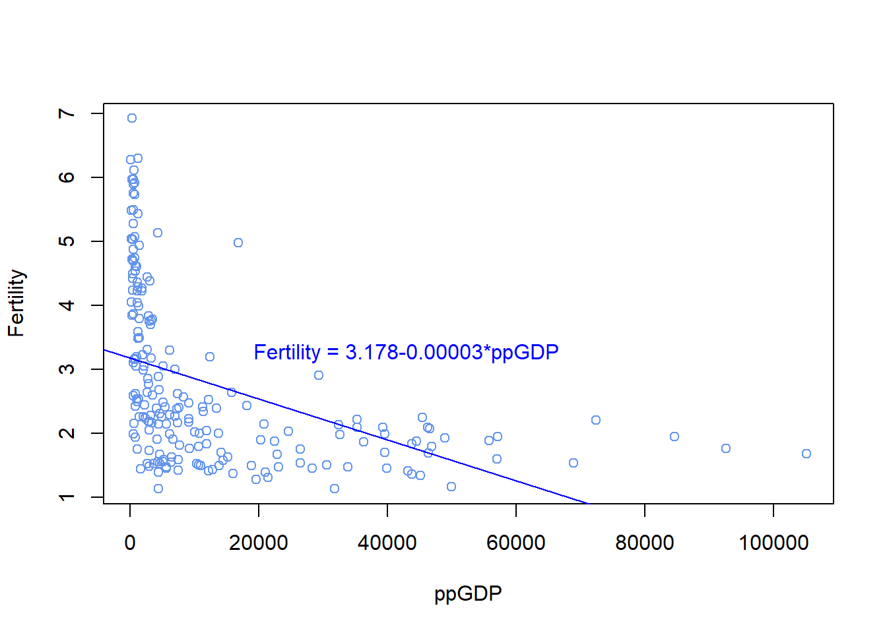
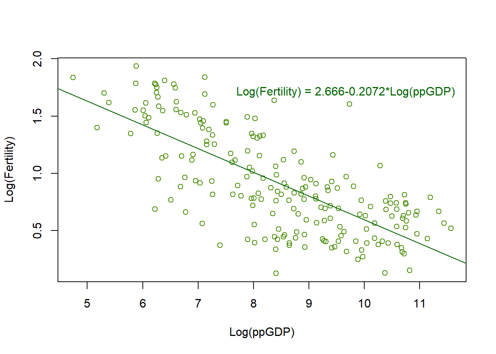
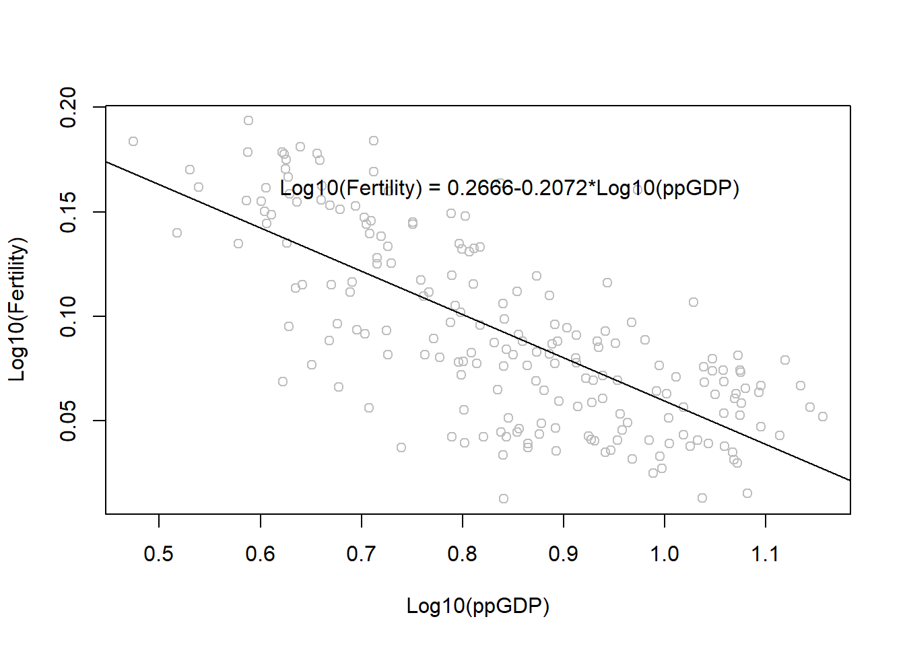
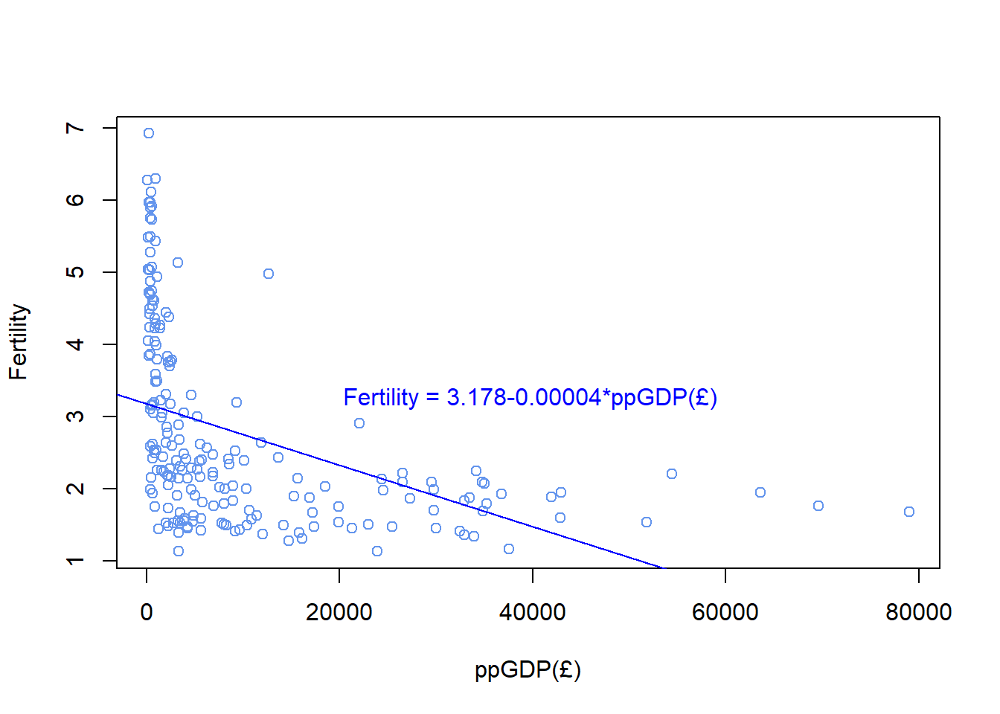
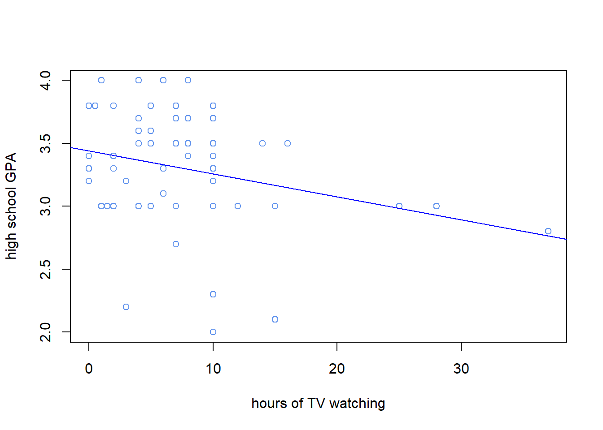

Warning: package 'alr4' was built under R version 4.2.3
Loading required package: car
Loading required package: carData
Loading required package: effects
Warning: package 'effects' was built under R version 4.2.3
lattice theme set by effectsTheme()
See ?effectsTheme for details.
Code
data(UN11)# check datahead(UN11)
region group fertility ppgdp lifeExpF pctUrban
Afghanistan Asia other 5.968 499.0 49.49 23
Albania Europe other 1.525 3677.2 80.40 53
Algeria Africa africa 2.142 4473.0 75.00 67
Angola Africa africa 5.135 4321.9 53.17 59
Anguilla Caribbean other 2.000 13750.1 81.10 100
Argentina Latin Amer other 2.172 9162.1 79.89 93
Code
dim(UN11)
[1] 199 6
(a)
Through the given problem, it can be seen that the research topic is the effect of ppgdp on the birth rate. In this research topic, the predictor is ‘ppgdp’ and the response is ‘fertility’.
(b)
First of all, a regression model between the ppgdp and fertility of countries was derived.
Code
summary(lm(UN11$fertility~UN11$ppgdp))
Call:
lm(formula = UN11$fertility ~ UN11$ppgdp)
Residuals:
Min 1Q Median 3Q Max
-1.9006 -0.8801 -0.3547 0.6749 3.7585
Coefficients:
Estimate Std. Error t value Pr(>|t|)
(Intercept) 3.178e+00 1.048e-01 30.331 < 2e-16 ***
UN11$ppgdp -3.201e-05 4.655e-06 -6.877 7.9e-11 ***
---
Signif. codes: 0 '***' 0.001 '**' 0.01 '*' 0.05 '.' 0.1 ' ' 1
Residual standard error: 1.206 on 197 degrees of freedom
Multiple R-squared: 0.1936, Adjusted R-squared: 0.1895
F-statistic: 47.29 on 1 and 197 DF, p-value: 7.903e-11
A regression model such as Fertility = 3.178-0.00003*ppGDP was derived. In other words, a single unit increase in ppgdp reduces the fertility rate by 0.00003.
Now, expressing this as a scatterplot is as follows.
options(scipen=999)plot(UN11$ppgdp, UN11$fertility, xlab="ppGDP",ylab="Fertility",col="cornflowerblue")abline(lm(UN11$fertility~UN11$ppgdp), col="blue")text(mean(UN11$ppgdp)+30000, mean(UN11$fertility)+0.5, "Fertility = 3.178-0.00003*ppGDP", col ="blue")

Overall, the regression equation derived earlier seems reasonable at first glance as it shows a downward trend to the right, but it can also be seen that the distribution of ppgdp is quite biased to the right.
Code
mean(UN11$ppgdp)
[1] 13011.95
Code
median(UN11$ppgdp)
[1] 4684.5
This can also be seen from the comparison of the mean and the median, and the mean of ppgdp is 13011.95 and the median is 4684.5, indicating that the distribution of ppgdp is biased to the right. Therefore, a simple linear regression model that does not properly convert variables will have many limitations in explaining the variability of fertility.
(c)
First, a new objects with a value obtained by logarithms each variable is generated.
Using these objects, the regression model was obtained in the same way as the problem (b) and a scatterplot was drawn.
Code
summary(lm(UN11$log_fertility~UN11$log_ppgdp))
Call:
lm(formula = UN11$log_fertility ~ UN11$log_ppgdp)
Residuals:
Min 1Q Median 3Q Max
-0.79828 -0.21639 0.02669 0.23424 0.95596
Coefficients:
Estimate Std. Error t value Pr(>|t|)
(Intercept) 2.66551 0.12057 22.11 <0.0000000000000002 ***
UN11$log_ppgdp -0.20715 0.01401 -14.79 <0.0000000000000002 ***
---
Signif. codes: 0 '***' 0.001 '**' 0.01 '*' 0.05 '.' 0.1 ' ' 1
Residual standard error: 0.3071 on 197 degrees of freedom
Multiple R-squared: 0.526, Adjusted R-squared: 0.5236
F-statistic: 218.6 on 1 and 197 DF, p-value: < 0.00000000000000022
Code
plot(UN11$log_ppgdp, UN11$log_fertility, xlab="Log(ppGDP)",ylab="Log(Fertility)",col="chartreuse4")abline(lm(UN11$log_fertility~UN11$log_ppgdp), col="darkgreen")text(mean(UN11$log_ppgdp+1.2), mean(UN11$log_fertility+0.8), "Log(Fertility) = 2.666-0.2072*Log(ppGDP)", col ="darkgreen")

A regression line that reflects the data much better than when a regression line was derived without transforming variables was derived. The R-squared value is also higher than before transform.(0.19 -> 0.53) In other words, the performance of the regression model improved by logarithms each variable.
Code
# change base of logarithmsUN11$log10_ppgdp<-log(UN11$ppgdp, base=exp(10))UN11$log10_fertility<-log(UN11$fertility, base=exp(10))summary(lm(UN11$log10_fertility~UN11$log10_ppgdp))
Call:
lm(formula = UN11$log10_fertility ~ UN11$log10_ppgdp)
Residuals:
Min 1Q Median 3Q Max
-0.079828 -0.021639 0.002669 0.023424 0.095596
Coefficients:
Estimate Std. Error t value Pr(>|t|)
(Intercept) 0.26655 0.01206 22.11 <0.0000000000000002 ***
UN11$log10_ppgdp -0.20715 0.01401 -14.79 <0.0000000000000002 ***
---
Signif. codes: 0 '***' 0.001 '**' 0.01 '*' 0.05 '.' 0.1 ' ' 1
Residual standard error: 0.03071 on 197 degrees of freedom
Multiple R-squared: 0.526, Adjusted R-squared: 0.5236
F-statistic: 218.6 on 1 and 197 DF, p-value: < 0.00000000000000022
Code
plot(UN11$log10_ppgdp, UN11$log10_fertility, xlab="Log10(ppGDP)",ylab="Log10(Fertility)",col="gray")abline(lm(UN11$log10_fertility~UN11$log10_ppgdp), col="black")text(mean(UN11$log10_ppgdp), mean(UN11$log10_fertility+0.07), "Log10(Fertility) = 0.2666-0.2072*Log10(ppGDP)", col ="black")

When base of logarithms changed to 10, there are no changes in distribution of data and shape of line. But scales of each axes are changed.
Question 2
Code
UN11$pound_ppgdp<-UN11$ppgdp/1.33
(a)
Code
summary(lm(UN11$fertility~UN11$pound_ppgdp))
Call:
lm(formula = UN11$fertility ~ UN11$pound_ppgdp)
Residuals:
Min 1Q Median 3Q Max
-1.9006 -0.8801 -0.3547 0.6749 3.7585
Coefficients:
Estimate Std. Error t value Pr(>|t|)
(Intercept) 3.177911642 0.104772778 30.331 < 0.0000000000000002 ***
UN11$pound_ppgdp -0.000042575 0.000006191 -6.877 0.000000000079 ***
---
Signif. codes: 0 '***' 0.001 '**' 0.01 '*' 0.05 '.' 0.1 ' ' 1
Residual standard error: 1.206 on 197 degrees of freedom
Multiple R-squared: 0.1936, Adjusted R-squared: 0.1895
F-statistic: 47.29 on 1 and 197 DF, p-value: 0.00000000007903
Code
plot(UN11$pound_ppgdp, UN11$fertility, xlab="ppGDP(£)",ylab="Fertility",col="cornflowerblue")abline(lm(UN11$fertility~UN11$pound_ppgdp), col="blue")text(mean(UN11$pound_ppgdp)+30000, mean(UN11$fertility)+0.5, "Fertility = 3.178-0.00004*ppGDP(£)", col ="blue")

When dollars are converted into pounds, the slope of the simple regression line changes.(from approx. 0.00003 to approx. 0.00004). But the intercept does not change.
(b)
Even if the monetary unit is changed, the r-squared value remains unchanged (equivalent to 0.1936). That is, there is no change in the ratio at which the change in ppgdp explains the change in the facility. In the problem (a), the change in slope is simply caused by the unit conversion of the x variable. In fact, applying the exchange rate of 1.33, which is the changed slope, shows that it is the same as the slope calculated in dollars.
A multiple regression model was derived to find out the relationship between the annual precipitation of the six sites presented in the problem and the stream runoff volume.
It was analyzed that 92.5% of the stream runoff volume fluctuation could be explained through the precipitation variation at six sites(R-squared is 0.9248). However, this analysis may overlook the problem of overfitting, an increase in explanatory power due to an increase in the number of variables.
There are also variables that show a fairly high correlation between the variables included in the model. It should be considered that these variables can also distort the explanatory power of the model.
In addition, it should be considered that a small number of extreme data can have a distorted effect on the entire data.
Overall, stream runoff volume can be predicted to some extent using various variables, but the relationship between variables and the existence of extreme values should be considered when creating this prediction model.
Question 4
Code
data("Rateprof")head(Rateprof)
gender numYears numRaters numCourses pepper discipline dept
1 male 7 11 5 no Hum English
2 male 6 11 5 no Hum Religious Studies
3 male 10 43 2 no Hum Art
4 male 11 24 5 no Hum English
5 male 11 19 7 no Hum Spanish
6 male 10 15 9 no Hum Spanish
quality helpfulness clarity easiness raterInterest sdQuality sdHelpfulness
1 4.636364 4.636364 4.636364 4.818182 3.545455 0.5518564 0.6741999
2 4.318182 4.545455 4.090909 4.363636 4.000000 0.9020179 0.9341987
3 4.790698 4.720930 4.860465 4.604651 3.432432 0.4529343 0.6663898
4 4.250000 4.458333 4.041667 2.791667 3.181818 0.9325048 0.9315329
5 4.684211 4.684211 4.684211 4.473684 4.214286 0.6500112 0.8200699
6 4.233333 4.266667 4.200000 4.533333 3.916667 0.8632717 1.0327956
sdClarity sdEasiness sdRaterInterest
1 0.5045250 0.4045199 1.1281521
2 0.9438798 0.5045250 1.0744356
3 0.4129681 0.5407021 1.2369438
4 0.9990938 0.5882300 1.3322506
5 0.5823927 0.6117753 0.9749613
6 0.7745967 0.6399405 0.6685579
First of all, it is easy to see that these three variables(quality, helpfulness, clarity) are highly correlated with each other and show a clear linear relationship.(All correlation coefficient 0.9 or higher)
Next, in the case of easiness, it shows a some positive correlation with the above three variables(correlation coefficient about 0.5). However, the correlation with the raterInterest appears weaker than them. In other words, it shows a weak positive correlation.
Finally, the rateInterest has a positive correlation coefficient of about 0.4 with the previous three variables(quality, helpfulness, clarity), and shows a positive correlation coefficient of about 0.2 with easiness.
In summary, since quality, helpfulness, clarity has a very strong correlation with each other, it is necessary to consider the method of excluding some variables in consideration of the advantages of statistical analysis including these variables.
Question 5
Code
library(smss)
Warning: package 'smss' was built under R version 4.2.3
Code
data(student.survey)head(student.survey)
subj ge ag hi co dh dr tv sp ne ah ve pa pi re
1 1 m 32 2.2 3.5 0 5.0 3 5 0 0 FALSE r conservative most weeks
2 2 f 23 2.1 3.5 1200 0.3 15 7 5 6 FALSE d liberal occasionally
3 3 f 27 3.3 3.0 1300 1.5 0 4 3 0 FALSE d liberal most weeks
4 4 f 35 3.5 3.2 1500 8.0 5 5 6 3 FALSE i moderate occasionally
5 5 m 23 3.1 3.5 1600 10.0 6 6 3 0 FALSE i very liberal never
6 6 m 39 3.5 3.5 350 3.0 4 5 7 0 FALSE d liberal occasionally
ab aa ld
1 FALSE FALSE FALSE
2 FALSE FALSE NA
3 FALSE FALSE NA
4 FALSE FALSE FALSE
5 FALSE FALSE FALSE
6 FALSE FALSE NA
Code
dim(student.survey)
[1] 60 18
(i-a)
Looking at the data first, it is composed of nominal variables.
Code
table(student.survey$pi)
very liberal liberal slightly liberal
8 24 6
moderate slightly conservative conservative
10 6 4
very conservative
2
Code
table(student.survey$re)
never occasionally most weeks every week
15 29 7 9
Regression analysis such as logistic regression can also be performed for nominal variables. Here, regression analysis will be performed simply by assigning a number corresponding to each variable value. The level of the variable is a orderal variable, and in the case of religion, the higher the number, the more participation in religious activities, and in the case of political ideology, the higher the number, the more conservative it was.
The effect of religiosity on political ideology shows a positive correlation. In other words, the more often you participate in religious activities, the more conservative your political ideology becomes, and the more you do not participate in religious activities, the more liberal your political ideology tends to become.
Call:
lm(formula = student.survey$hi ~ student.survey$tv)
Residuals:
Min 1Q Median 3Q Max
-1.2583 -0.2456 0.0417 0.3368 0.7051
Coefficients:
Estimate Std. Error t value Pr(>|t|)
(Intercept) 3.441353 0.085345 40.323 <0.0000000000000002 ***
student.survey$tv -0.018305 0.008658 -2.114 0.0388 *
---
Signif. codes: 0 '***' 0.001 '**' 0.01 '*' 0.05 '.' 0.1 ' ' 1
Residual standard error: 0.4467 on 58 degrees of freedom
Multiple R-squared: 0.07156, Adjusted R-squared: 0.05555
F-statistic: 4.471 on 1 and 58 DF, p-value: 0.03879
Code
# plotplot(student.survey$tv, student.survey$hi,xlab="hours of TV watching",ylab="high school GPA",col="cornflowerblue")abline(lm(student.survey$hi~student.survey$tv), col="blue")

(ii-b)
As shown in the figure, there is a weak negative correlation, However, size of effect is small(R-squared is 0.0715). In this case, there could be a variable that distorts the size or direction of the effect between the variable of watching TV and performance. Therefore, it is necessary to further analyze the relationship with other variables.
Source Code
---title: "Homework 3"author: "Young Soo Choi"description: "hw3"date: "04/11/2023"format: html: toc: true code-fold: true code-copy: true code-tools: truecategories: - hw3---# Question 1```{r}# data loadinglibrary(alr4)data(UN11)# check datahead(UN11)dim(UN11)```## (a)Through the given problem, it can be seen that the research topic is the effect of ppgdp on the birth rate. In this research topic, the predictor is 'ppgdp' and the response is 'fertility'. ## (b)First of all, a regression model between the ppgdp and fertility of countries was derived.```{r}summary(lm(UN11$fertility~UN11$ppgdp))```A regression model such as Fertility = 3.178-0.00003*ppGDP was derived. In other words, a single unit increase in ppgdp reduces the fertility rate by 0.00003.Now, expressing this as a scatterplot is as follows.```{r}library(tidyverse)options(scipen=999)plot(UN11$ppgdp, UN11$fertility, xlab="ppGDP",ylab="Fertility",col="cornflowerblue")abline(lm(UN11$fertility~UN11$ppgdp), col="blue")text(mean(UN11$ppgdp)+30000, mean(UN11$fertility)+0.5, "Fertility = 3.178-0.00003*ppGDP", col ="blue")```Overall, the regression equation derived earlier seems reasonable at first glance as it shows a downward trend to the right, but it can also be seen that the distribution of ppgdp is quite biased to the right.```{r}mean(UN11$ppgdp)median(UN11$ppgdp)```This can also be seen from the comparison of the mean and the median, and the mean of ppgdp is 13011.95 and the median is 4684.5, indicating that the distribution of ppgdp is biased to the right. Therefore, a simple linear regression model that does not properly convert variables will have many limitations in explaining the variability of fertility.## (c)First, a new objects with a value obtained by logarithms each variable is generated.```{r}UN11$log_ppgdp<-log(UN11$ppgdp)UN11$log_fertility<-log(UN11$fertility)```Using these objects, the regression model was obtained in the same way as the problem (b) and a scatterplot was drawn.```{r}summary(lm(UN11$log_fertility~UN11$log_ppgdp))``````{r}plot(UN11$log_ppgdp, UN11$log_fertility, xlab="Log(ppGDP)",ylab="Log(Fertility)",col="chartreuse4")abline(lm(UN11$log_fertility~UN11$log_ppgdp), col="darkgreen")text(mean(UN11$log_ppgdp+1.2), mean(UN11$log_fertility+0.8), "Log(Fertility) = 2.666-0.2072*Log(ppGDP)", col ="darkgreen")```A regression line that reflects the data much better than when a regression line was derived without transforming variables was derived.The R-squared value is also higher than before transform.(0.19 -> 0.53) In other words, the performance of the regression model improved by logarithms each variable.```{r}# change base of logarithmsUN11$log10_ppgdp<-log(UN11$ppgdp, base=exp(10))UN11$log10_fertility<-log(UN11$fertility, base=exp(10))summary(lm(UN11$log10_fertility~UN11$log10_ppgdp))plot(UN11$log10_ppgdp, UN11$log10_fertility, xlab="Log10(ppGDP)",ylab="Log10(Fertility)",col="gray")abline(lm(UN11$log10_fertility~UN11$log10_ppgdp), col="black")text(mean(UN11$log10_ppgdp), mean(UN11$log10_fertility+0.07), "Log10(Fertility) = 0.2666-0.2072*Log10(ppGDP)", col ="black")```When base of logarithms changed to 10, there are no changes in distribution of data and shape of line. But scales of each axes are changed.# Question 2```{r}UN11$pound_ppgdp<-UN11$ppgdp/1.33```## (a)```{r}summary(lm(UN11$fertility~UN11$pound_ppgdp))``````{r}plot(UN11$pound_ppgdp, UN11$fertility, xlab="ppGDP(£)",ylab="Fertility",col="cornflowerblue")abline(lm(UN11$fertility~UN11$pound_ppgdp), col="blue")text(mean(UN11$pound_ppgdp)+30000, mean(UN11$fertility)+0.5, "Fertility = 3.178-0.00004*ppGDP(£)", col ="blue")```When dollars are converted into pounds, the slope of the simple regression line changes.(from approx. 0.00003 to approx. 0.00004). But the intercept does not change.## (b)Even if the monetary unit is changed, the r-squared value remains unchanged (equivalent to 0.1936). That is, there is no change in the ratio at which the change in ppgdp explains the change in the facility.In the problem (a), the change in slope is simply caused by the unit conversion of the x variable. In fact, applying the exchange rate of 1.33, which is the changed slope, shows that it is the same as the slope calculated in dollars.```{r}0.000042575/1.33```# Question 3```{r}data(water)head(water)dim(water)``````{r}summary(lm(BSAAM~APMAM+APSAB+APSLAKE+OPBPC+OPRC+OPSLAKE,water))pairs(water[,2:8])cor(water[,2:8])```A multiple regression model was derived to find out the relationship between the annual precipitation of the six sites presented in the problem and the stream runoff volume.It was analyzed that 92.5% of the stream runoff volume fluctuation could be explained through the precipitation variation at six sites(R-squared is 0.9248). However, this analysis may overlook the problem of overfitting, an increase in explanatory power due to an increase in the number of variables.There are also variables that show a fairly high correlation between the variables included in the model. It should be considered that these variables can also distort the explanatory power of the model.In addition, it should be considered that a small number of extreme data can have a distorted effect on the entire data.Overall, stream runoff volume can be predicted to some extent using various variables, but the relationship between variables and the existence of extreme values should be considered when creating this prediction model.# Question 4```{r}data("Rateprof")head(Rateprof)dim(Rateprof)``````{r}pairs(Rateprof[,8:12])cor(Rateprof[,8:12])```First of all, it is easy to see that these three variables(quality, helpfulness, clarity) are highly correlated with each other and show a clear linear relationship.(All correlation coefficient 0.9 or higher)Next, in the case of easiness, it shows a some positive correlation with the above three variables(correlation coefficient about 0.5). However, the correlation with the raterInterest appears weaker than them. In other words, it shows a weak positive correlation.Finally, the rateInterest has a positive correlation coefficient of about 0.4 with the previous three variables(quality, helpfulness, clarity), and shows a positive correlation coefficient of about 0.2 with easiness.In summary, since quality, helpfulness, clarity has a very strong correlation with each other, it is necessary to consider the method of excluding some variables in consideration of the advantages of statistical analysis including these variables.# Question 5```{r}library(smss)data(student.survey)head(student.survey)dim(student.survey)```## (i-a)Looking at the data first, it is composed of nominal variables.```{r}table(student.survey$pi)table(student.survey$re)```Regression analysis such as logistic regression can also be performed for nominal variables. Here, regression analysis will be performed simply by assigning a number corresponding to each variable value. The level of the variable is a orderal variable, and in the case of religion, the higher the number, the more participation in religious activities, and in the case of political ideology, the higher the number, the more conservative it was.```{r}# transform variablesstudent.survey$pol_id<-ifelse(student.survey[,"pi"]=="very liberal", 1,ifelse(student.survey[,"pi"]=="liberal", 2,ifelse(student.survey[,"pi"]=="slightly liberal", 3,ifelse(student.survey[,"pi"]=="moderate", 4,ifelse(student.survey[,"pi"]=="slightly conservative", 5,ifelse(student.survey[,"pi"]=="conservative", 6, 7))))))student.survey$rel_fre<-ifelse(student.survey[,"re"]=="never",1,ifelse(student.survey[,"re"]=="occasionally", 2,ifelse(student.survey[,"re"]=="most weeks", 3, 4)))``````{r}# regression modelsummary(lm(student.survey$pol_id~student.survey$rel_fre))# plotplot(student.survey$rel_fre, student.survey$pol_id, xaxt ='n', yaxt='n',xlab="Religiosity",ylab="Political Ideology",col="cornflowerblue")axis(1, at =seq(1, 4, by =1), labels =c("never", "occasionally", "most weeks", "every weeks"))axis(2, at =seq(1,7, by=1), labels =c("very liberal", "liberal", "slightly liberal", "moderate", "slightly conservative", "conservative", "very conservative"))abline(lm(student.survey$pol_id~student.survey$rel_fre), col="blue")```## (i-b)The effect of religiosity on political ideology shows a positive correlation. In other words, the more often you participate in religious activities, the more conservative your political ideology becomes, and the more you do not participate in religious activities, the more liberal your political ideology tends to become.## (ii-a)```{r}# regression modelsummary(lm(student.survey$hi~student.survey$tv))# plotplot(student.survey$tv, student.survey$hi,xlab="hours of TV watching",ylab="high school GPA",col="cornflowerblue")abline(lm(student.survey$hi~student.survey$tv), col="blue")```## (ii-b)As shown in the figure, there is a weak negative correlation, However, size of effect is small(R-squared is 0.0715). In this case, there could be a variable that distorts the size or direction of the effect between the variable of watching TV and performance. Therefore, it is necessary to further analyze the relationship with other variables.